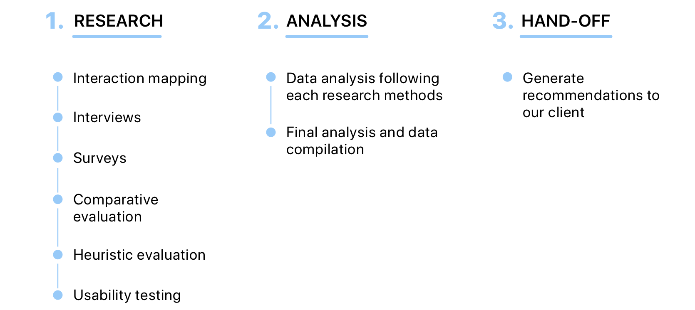
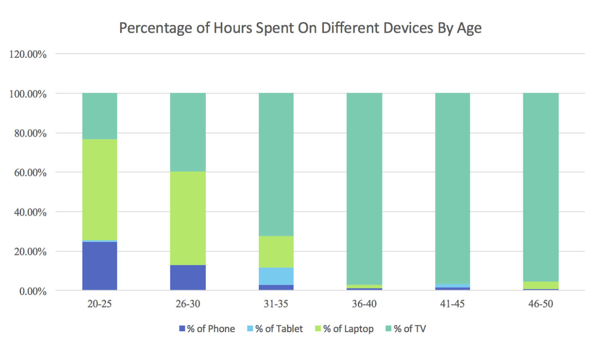
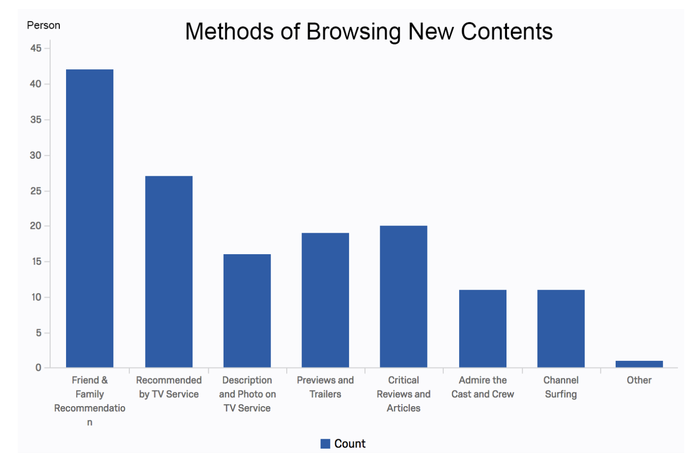
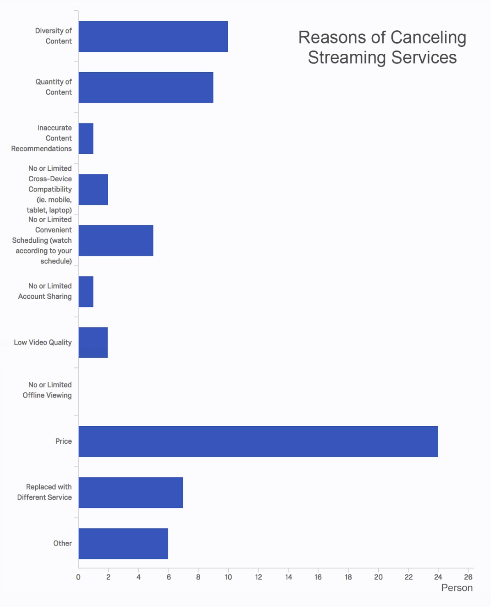
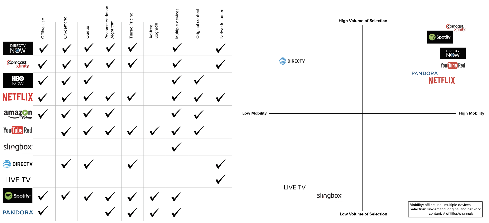

This is a group-based class project on needs assessment and usability evaluation of a real-life client. Our team advised DirecTV Now, a platform that provides both live streaming and video-on-demand across multiple devices, on the usability of their product, focusing primarily on retention and acquisition.
The project took place over a span of 3 months (January 2017-April 2017).
– – Process and Methodology

Our team followed a series of methods to assess our client's platform's needs and usability.
Target population
Because DirecTV Now is interested in acquiring young subscribers while still retaining their older demographic, we focused on a population that are in a state of financial transition or relocation when they may reconsider their TV subscription.
College Students
Young Professionals
(Soon to be) Empty Nesters
– – Findings and Recommendations
Content Recommendations
Users value services that accommodate content browsing and selection. According to our survey, users consider the diversity and quantity of content their top priorities when choosing a streaming service.
Users choose content by checking new releases, referring to recommendations from system algorithms, and speaking with friends and family. Compared to its competitors, DirecTV Now does not feature the same breadth of recommendation features.
We suggest that DirecTV Now make its browsing and recommendation features more obvious to users. The interface should include filtering features and categorization by genre or new releases to help users better locate their preferred content. We also suggest that DirecTV Now incorporate social engagement features to capitalize on word of mouth as a source for content recommendations.
Personalized Functions
Users value systems that accommodate their viewing schedule and habits. DirecTV Now simplifies rediscovering favorite content through their “watchlist” and “continue watching” features. However, both our heuristic evaluation and usability testing revealed that those highly prized personalization features lack discoverability.
We suggest DirecTV Now give users the option to truly personalize their experience through ratings, genre preferences, and multiple accounts. At the very least, user should be able to utilize the existing “Continue Watching” and “Watchlist” functions more easily and make then more accessible from the home page.
Usability Issues
1) The live TV window autoplays on the homepage, slowing loading time. Participants expressed annoyance with the autoplay feature, but found no option to stop it in their settings. DirecTV Now should allow users to customize the autoplay function, giving users the freedom to decide when content does or does not play.
Screenshot of DirecTV Now's homepage with the autoplay feature.
2) We also found that global navigation is inconsistently structured, creating confusion and the potential for unnecessary click-throughs that impede the user process
We suggest that DirecTV Now implements consistent language and markings that reflects the user’s mental map to combat these usability issues.
– – Interviews
We conducted five 30-minutes interviews from each user category, covered interviewees' chosen television providers, viewership and browsing habits, preferred settings, and pain points.
We found that the target users:
look for a broad content selection when selecting subscription services, and often subscribe to multiple services in order to fulfill their content needs.
tend to prioritize using services that allow them to develop queues of their favorite shows or content they would like to return to later.
value features that allow them to plan viewing around their busy schedules, and to view content across multiple devices.
use these platforms to facilitate social gatherings with family and friends, which leads to specific needs and goals that differ from those when watching independently.
– – Survey
Using surveys, we collected users' behavioral and attitudinal preferences towards various television platforms. Analyzing the responses, with a confidence level of 95%, we found that:
1) respondents in their 20s report spending a higher percentage of their viewing time using mobile phones, laptops, and tablets, and significantly less time viewing content on TVs than do respondents aged 30 and above.

Survey results for % of hours spent on different devices by age.
2) family and friends are the primary source for content recommendations.

Survey results for methods of browsing new contents.
3) the three most important factors that contribute to satisfaction with a service are price, diversity of content, and quality of content.

Survey results for streaming services cancellation reasons.
– – Comparative Evaluation

Comparative Evaluation of different media streaming services.
We conducted a comparative evaluation to determine DirecTV Now's market standing. We took a look at price, convenience, device compatibility, browsing features, and content.
DirecTV Now does not provide the same level of personalization as its competitors. There is no evident recommendation algorithm with a list of recommended content, nor is there an option to rate content previously viewed. DirecTV Now could benefit from investigating how a ratings system or recommendation algorithm could help with the discoverability of content that is tailored to individual users.
Secondly, there are no options to download or DVR content to watch at a later time. If the content a user wishes to watch is not one of the titles listed on demand, there is no way to view it after the air date. This ties in with the lack of visibility of which content is only available on its air date, and which is available on demand. DirecTV Now could improve the experience by making this distinction clearer.
– – Heuristic Evaluation
Using Nielson's ten heuristics for user interface design (1995) and severity rankings, we explored DirecTV Now's actual system in the context of user needs. Users were asked to complete four main tasks: find information, browse live television, browse streaming television, and customize settings. We found that:
The lack of identification of content availability, and the duration of the availability, reduces system flexibility and visibility of system status.
Live television autoplays upon logging into the DirecTV Now site, limiting user freedom and flexibility.
Global navigation inconsistently structured, creating confusion and the potential for unnecessary click-throughs that impede the user process.
Search results do not respond to user’s behavior appropriately.
Customized functions, such as watchlist and viewing history, are not easily recognizable.
– – Usability Test
We discovered three main usability issues:
poor facilitation of information seeking behavior
unclear and inconsistent interface navigation options
a lack of discoverability for personalization
– – Reflection
Recruiting Limitation
Due to logistical constraints, we recruited many of our participatns from the greater Ann Arbor and metro Detroit area, thus our sample frame is much smaller and far less diverse than necessary for an accurate comparison to DirecTV Now's comprehensive user base.
Narrow Focus
We primarily evlauted the desktop version, as per our client's request. However, our respondents did mention that they value cross device mobility.